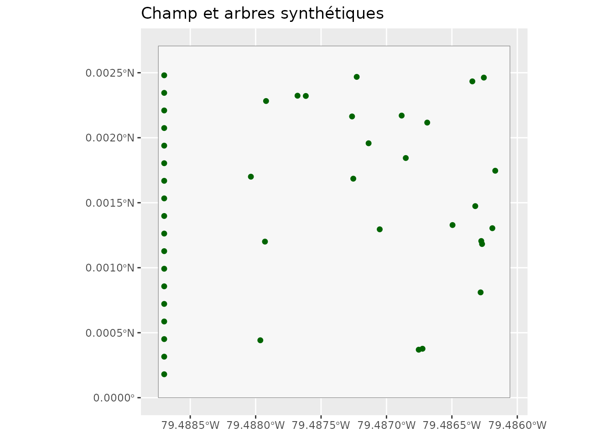
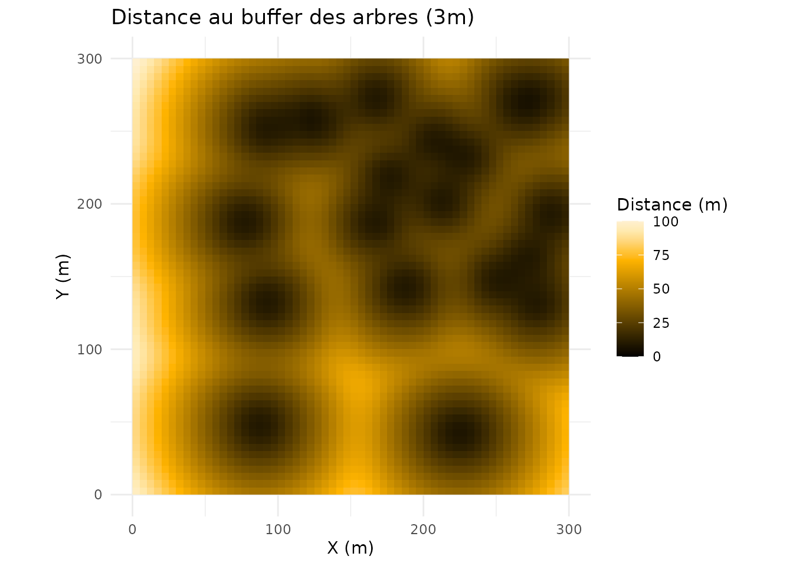
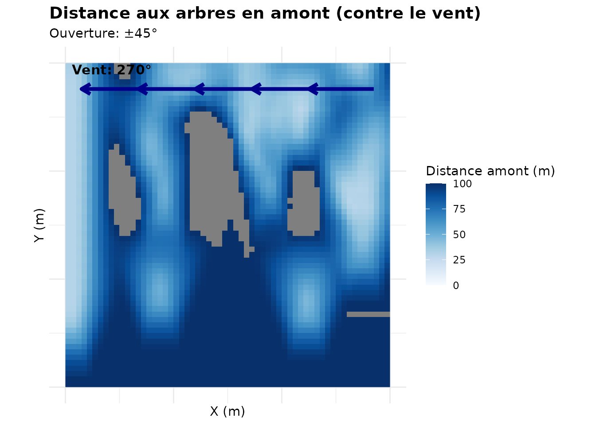
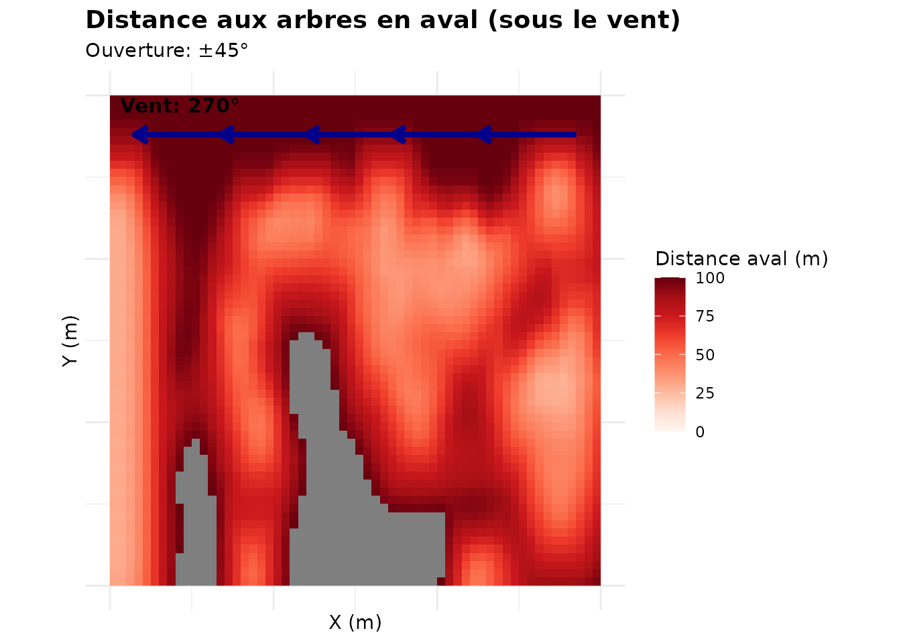
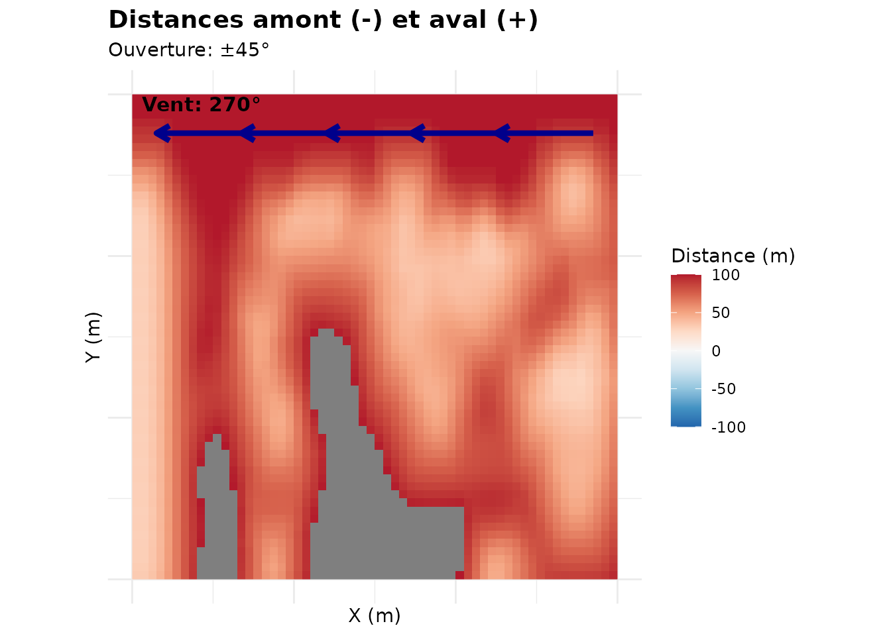
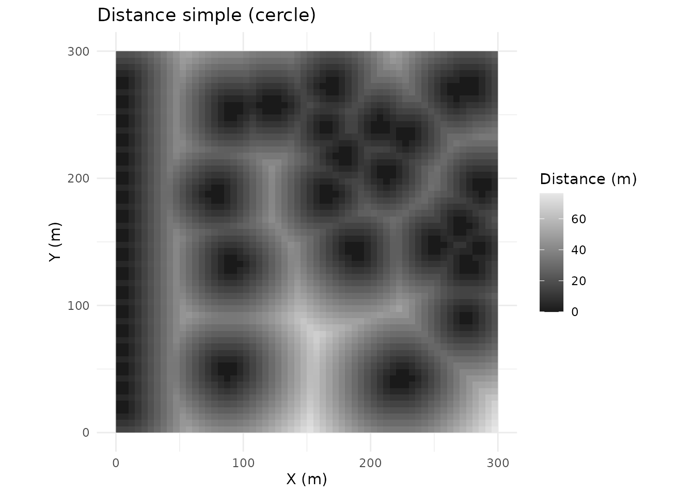
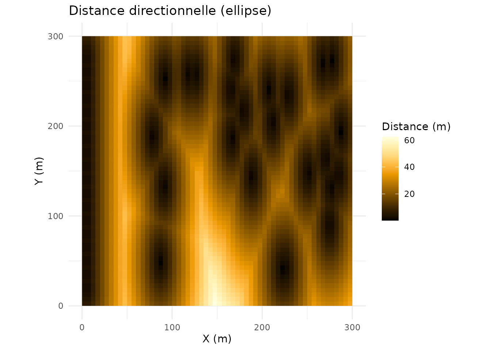
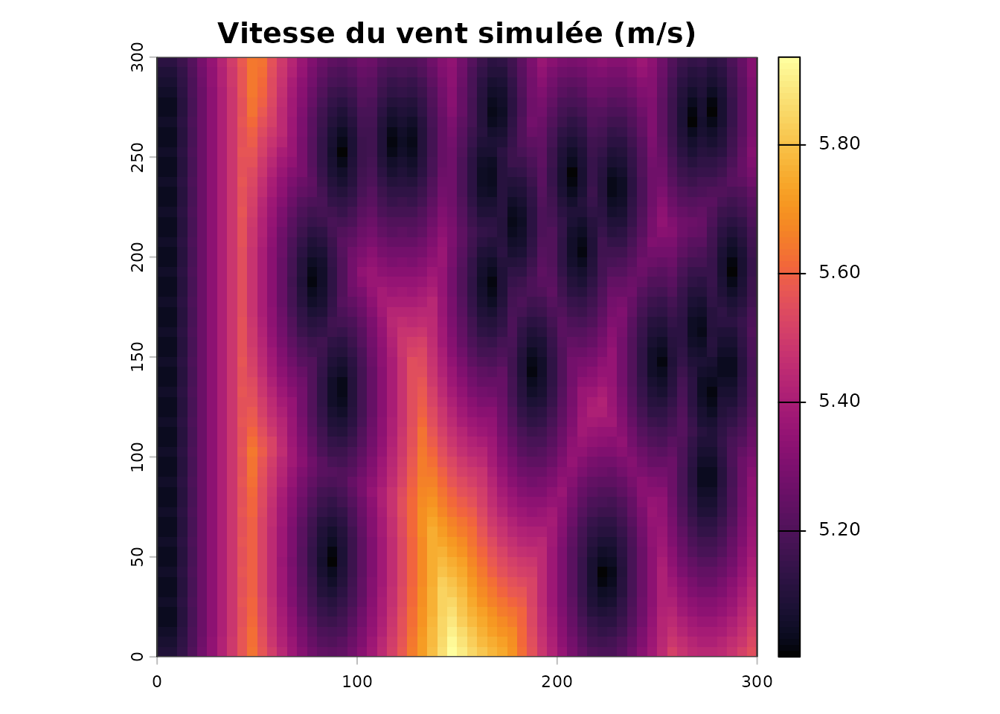
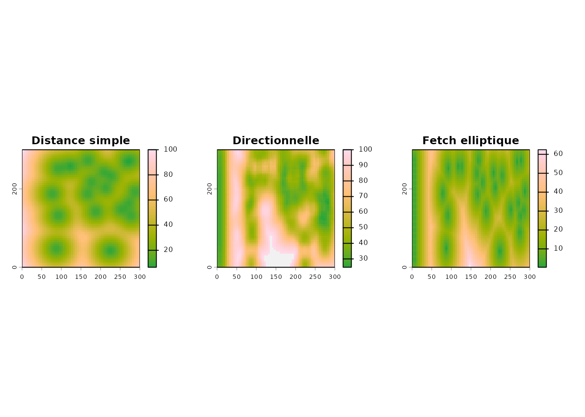

Distances aux arbres et effet du vent
Source:vignettes/distances-arbres-vent.Rmd
distances-arbres-vent.RmdTrois façons de mesurer l’influence des arbres
| Approche | Fonction | Idée |
|---|---|---|
| Distance simple | calculer_distance_arbres() |
distance euclidienne aux arbres |
| Distance directionnelle | calculer_distances_vent() |
distingue amont (contre le vent) et aval (sous le vent) |
| Fetch elliptique | calculer_fetch_vent() |
étire la distance dans l’axe du vent |
Pour rester reproductible, on utilise un champ et des arbres synthétiques : une haie sur le bord ouest et quelques arbres isolés.
champ <- st_as_sf(st_sfc(
st_polygon(list(matrix(c(0, 0, 300, 0, 300, 300, 0, 300, 0, 0),
ncol = 2, byrow = TRUE))),
crs = 32618))
set.seed(42)
haie <- data.frame(x = 5, y = seq(20, 280, by = 15))
isoles <- data.frame(x = runif(25, 60, 290), y = runif(25, 40, 280))
arbres <- st_as_sf(rbind(haie, isoles), coords = c("x", "y"), crs = 32618)
ggplot() +
geom_sf(data = champ, fill = "grey97", colour = "grey50") +
geom_sf(data = arbres, colour = "darkgreen", size = 1.6) +
coord_sf() +
labs(title = "Champ et arbres synthétiques")
Distance simple aux arbres
d <- calculer_distance_arbres(arbres_sf = arbres, champ_bbox = champ,
resolution = 5, buffer_arbre = 3,
max_distance = 100)
visualiser_distance_arbres(d, type = "buffer")
Distance directionnelle (amont / aval)
angle_vent est donné en degrés (0 = Nord, 90 = Est).
Ici, un vent d’ouest (270°).
dv <- calculer_distances_vent(arbres_sf = arbres, angle_vent = 270,
champ_bbox = champ, resolution = 5,
buffer_arbre = 3, angle_focal = 45,
max_distance = 100)
tracer_carte_vent(dv, type = "amont")
tracer_carte_vent(dv, type = "aval")
amont mesure la distance aux arbres situés du
côté d’où vient le vent (zone protégée) ; aval
ceux situés sous le vent (zone exposée).
tracer_carte_vent(dv, type = "les_deux")
Fetch elliptique
Le fetch étire la distance dans la direction du vent
(coef_ellipse).
fetch <- calculer_fetch_vent(arbres_sf = arbres, angle_vent = 270,
champ_bbox = champ, resolution = 5,
max_fetch = 100, coef_ellipse = 3)
v <- visualiser_fetch(fetch, type = "comparaison")
v$simple
v$elliptique
Vitesse du vent simulée
vit <- simuler_vitesse_vent_fetch(fetch, vitesse_ref = 5, coef_acceleration = 0.3)
terra::plot(vit$vitesse, main = "Vitesse du vent simulée (m/s)",
col = hcl.colors(100, "Inferno"))
plot(st_geometry(champ), add = TRUE, border = "grey30")
Comparer les approches
par(mfrow = c(1, 3), mar = c(2, 2, 3, 2))
terra::plot(d$distance_buffer, main = "Distance simple", col = hcl.colors(100, "Terrain"))
terra::plot(dv$totale, main = "Directionnelle", col = hcl.colors(100, "Terrain"))
terra::plot(fetch$distance_elliptique, main = "Fetch elliptique", col = hcl.colors(100, "Terrain"))
À partir du LiDAR
lidar <- telecharger_lidar_ponctuel(champ, buffer = 100)
arbres <- extraire_classifier_haies_lidar(lidar$nuage_points, hmin = 2)$trees_sf
d <- calculer_distance_arbres(arbres, champ, resolution = 2)
dv <- calculer_distances_vent(arbres, 270, champ, resolution = 2)